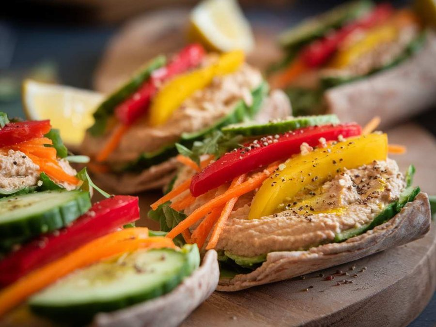

Gemüse-Wrap mit Hummus
Warum es dir hilftHummus liefert pflanzliches Eiweiß, Ballaststoffe und Zink, rohes Gemüse ergänzt Vitamin C und Frische. Avocado steuert gesunde Fette bei. Ein schnelles Mittagessen zum Mitnehmen. Wählen Sie bei Empfindlichkeit glutenfreie Wraps.
Zutaten
- 4 Vollkorn-Tortillas
- 200 g Hummus
- 1 rote Paprika, in dünne Streifen geschnitten
- 1 gelbe Paprika, in dünne Streifen geschnitten
- 1 kleine Gurke, in dünne Scheiben geschnitten
- 1 Karotte, geraspelt
- 50 g Rucola
- 1 Avocado, in Scheiben geschnitten
- Saft von 1/2 Zitrone
- Salz und Pfeffer nach Geschmack
Zubereitung
- Die Vollkorn-Tortillas auf einer sauberen Arbeitsfläche ausbreiten.
- Jeweils 50 g Hummus gleichmäßig auf jeder Tortilla verteilen.
- Die Paprikastreifen, Gurkenscheiben, geraspelte Karotte, Rucola und Avocadoscheiben gleichmäßig auf den Tortillas verteilen.
- Mit Zitronensaft beträufeln und nach Geschmack mit Salz und Pfeffer würzen.
- Die Tortillas fest aufrollen und in der Mitte durchschneiden.
Nährwerte pro Portion
320Kalorien
40 gKohlenhydr.
10 gBallaststoffe
5 gZucker
8 gEiweiß
2 gGes. Fett
10 gUnges. Fett
Tipps & Variationen
Für eine würzigere Note können Sie 1 TL Chiliflocken über das Gemüse streuen.
Statt Rucola kann auch Spinat verwendet werden.
Fügen Sie 50 g Feta-Käse hinzu, um dem Wrap eine cremige Note zu verleihen.